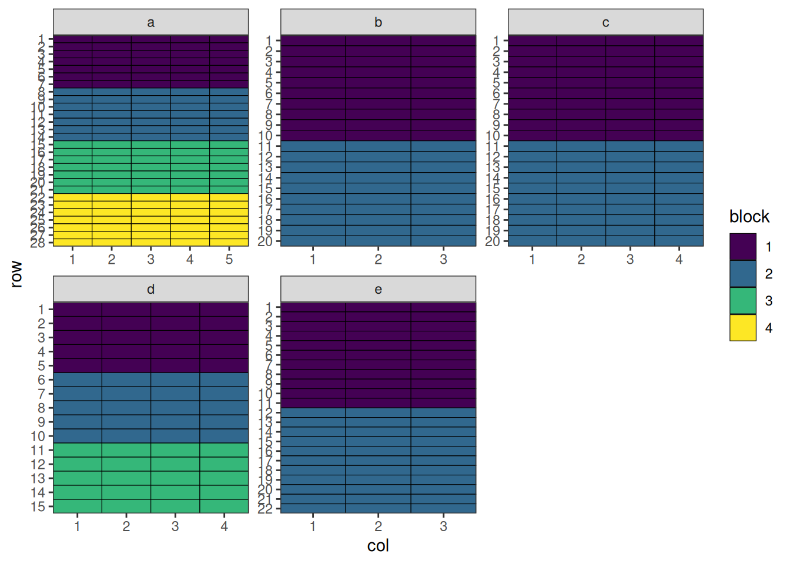
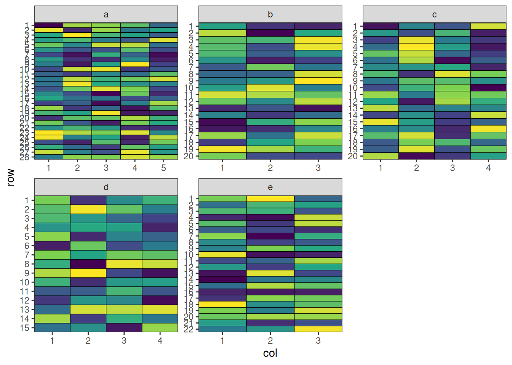
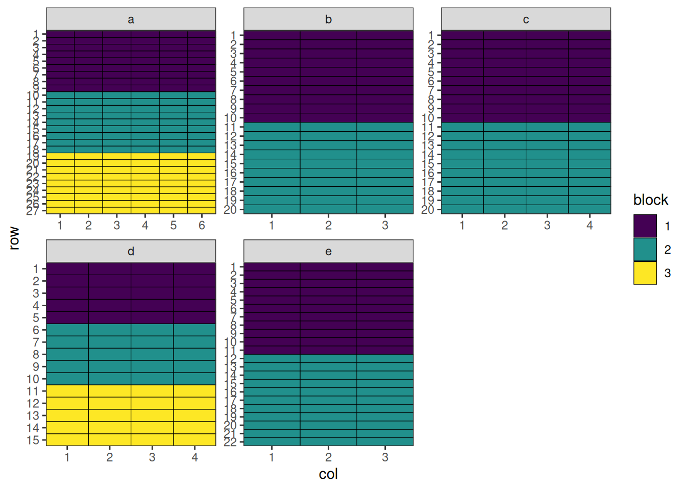
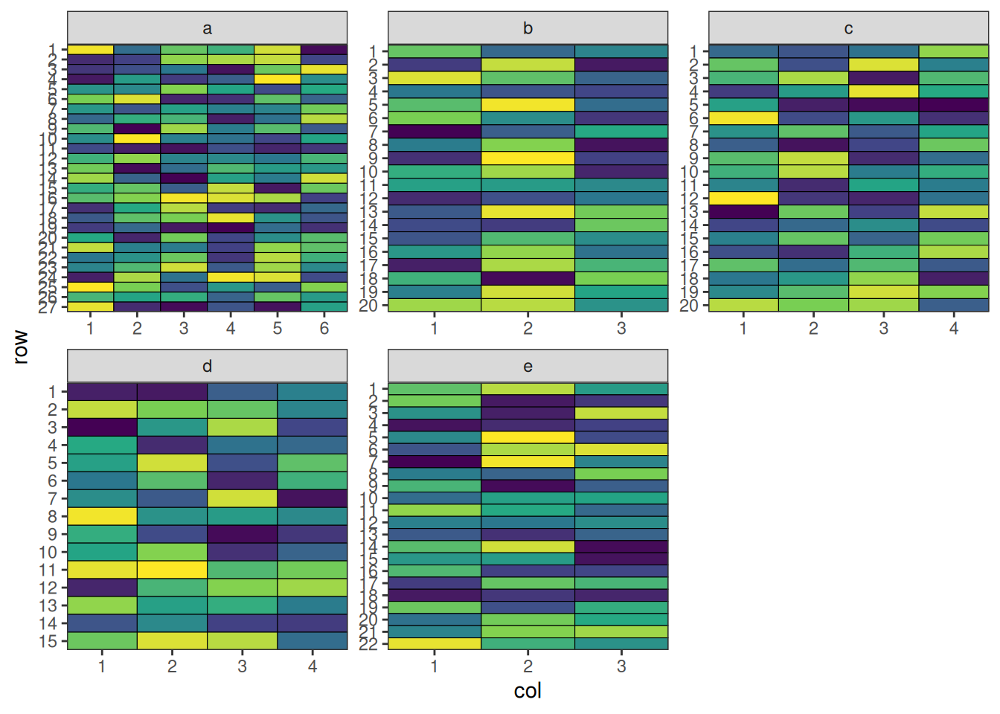
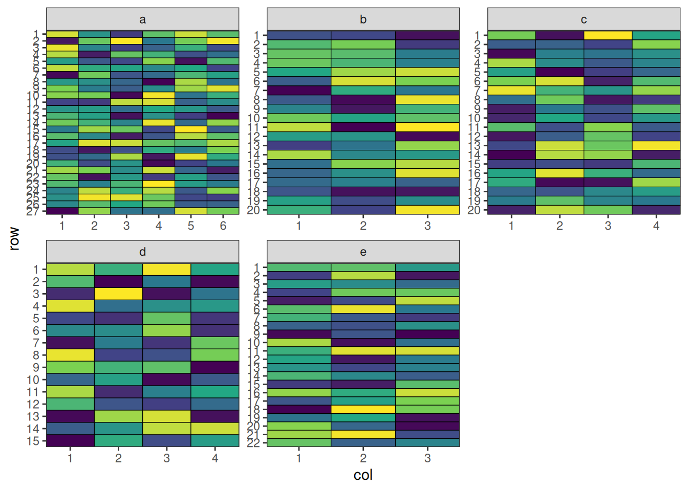
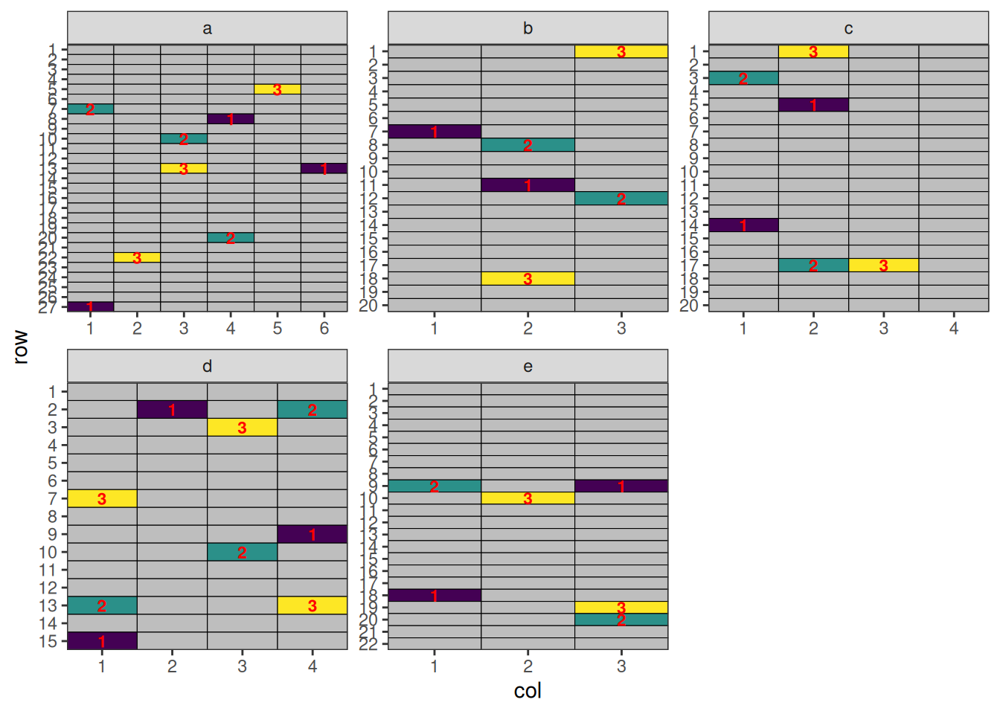

MET Design
Overview
Multi-environment trials (MET) are experimental designs used to evaluate the performance of treatments across different environments. An environment typically represents a unique combination of location, year, season, or management practice. MET designs are essential for understanding genotype × environment (G×E) interactions, stability, and adaptability of treatments under different conditions.
When to Use
- Treatment evaluation across multiple locations and/or years
- Crop breeding and regional recommendation trials
- Testing stability and adaptability
- When results are intended for large geographic areas
Structure
- Sites: Different locations of the trial
- Site-blocks: Blocks within sites
Optimising Allocation across All Sites
Setting Up MET Design with speed
Now we can create a data frame representing a MET design. Note that we can specify different dimensions for each site in the designs argument.
all_treatments <- c(rep(1:50, 7), rep(51:57, 8))
met_design <- initialise_design_df(
items = all_treatments,
designs = list(
a = list(nrows = 28, ncols = 5, block_nrows = 7, block_ncols = 5),
b = list(nrows = 20, ncols = 3, block_nrows = 10, block_ncols = 3),
c = list(nrows = 20, ncols = 4, block_nrows = 10, block_ncols = 4),
d = list(nrows = 15, ncols = 4, block_nrows = 5, block_ncols = 4),
e = list(nrows = 22, ncols = 3, block_nrows = 11, block_ncols = 3)
)
)
met_design$site_col <- paste(met_design$site, met_design$col, sep = "_")
met_design$site_block <- paste(met_design$site, met_design$block, sep = "_")
head(met_design) row col treatment row_block col_block block site site_col site_block
1 1 1 1 1 1 1 a a_1 a_1
2 2 1 2 1 1 1 a a_1 a_1
3 3 1 3 1 1 1 a a_1 a_1
4 4 1 4 1 1 1 a a_1 a_1
5 5 1 5 1 1 1 a a_1 a_1
6 6 1 6 1 1 1 a a_1 a_1Code
met_design$block <- factor(met_design$block)
plot_layout <- function(df, fill) {
scale_fill <- if (is.numeric(df[[fill]])) {
ggplot2::scale_fill_viridis_c
} else {
ggplot2::scale_fill_viridis_d
}
return(
ggplot2::ggplot(df, ggplot2::aes(col, row, fill = get(fill))) +
ggplot2::geom_tile(color = "black") +
scale_fill(na.value = "grey") +
ggplot2::facet_wrap(~site, scales = "free") +
ggplot2::scale_x_continuous(expand = c(0, 0), breaks = 1:max(df$col)) +
ggplot2::scale_y_continuous(expand = c(0, 0), breaks = 1:max(df$row), trans = scales::reverse_trans()) +
ggplot2::theme_bw() +
ggplot2::labs(fill = fill) +
ggplot2::theme(panel.grid.major = ggplot2::element_blank(), panel.grid.minor = ggplot2::element_blank())
)
}
plot_layout(met_design, "block")
Performing the Optimisation
For MET designs, we use lists of named arguments to specify the hierarchical structure. The optimise parameter defines what to optimise and constraints at each level.
optimise <- list(
connectivity = list(spatial_factors = ~site),
balance = list(swap_within = "site", spatial_factors = ~ site_col + site_block)
)
met_result <- speed(
data = met_design,
swap = "treatment",
early_stop_iterations = 5000,
optimise = optimise,
optimise_params = optim_params(random_initialisation = TRUE, adj_weight = 0),
seed = 112
)row and col are used as row and column, respectively.Optimising level: connectivity
Level: connectivity Iteration: 1000 Score: 2.341479 Best: 2.341479 Since Improvement: 26
Level: connectivity Iteration: 2000 Score: 1.091479 Best: 1.091479 Since Improvement: 38
Level: connectivity Iteration: 3000 Score: 0.877193 Best: 0.877193 Since Improvement: 602
Level: connectivity Iteration: 4000 Score: 0.8057644 Best: 0.8057644 Since Improvement: 211
Level: connectivity Iteration: 5000 Score: 0.7700501 Best: 0.7700501 Since Improvement: 169
Level: connectivity Iteration: 6000 Score: 0.7700501 Best: 0.7700501 Since Improvement: 1169
Level: connectivity Iteration: 7000 Score: 0.7700501 Best: 0.7700501 Since Improvement: 2169
Level: connectivity Iteration: 8000 Score: 0.7700501 Best: 0.7700501 Since Improvement: 3169
Level: connectivity Iteration: 9000 Score: 0.7700501 Best: 0.7700501 Since Improvement: 4169
Early stopping at iteration 9831 for level connectivity
Optimising level: balance
Level: balance Iteration: 1000 Score: 8.926692 Best: 8.926692 Since Improvement: 23
Level: balance Iteration: 2000 Score: 7.74812 Best: 7.74812 Since Improvement: 160
Level: balance Iteration: 3000 Score: 7.605263 Best: 7.605263 Since Improvement: 31
Level: balance Iteration: 4000 Score: 7.533835 Best: 7.533835 Since Improvement: 420
Level: balance Iteration: 5000 Score: 7.49812 Best: 7.49812 Since Improvement: 536
Level: balance Iteration: 6000 Score: 7.49812 Best: 7.49812 Since Improvement: 1536
Level: balance Iteration: 7000 Score: 7.49812 Best: 7.49812 Since Improvement: 2536
Level: balance Iteration: 8000 Score: 7.49812 Best: 7.49812 Since Improvement: 3536
Level: balance Iteration: 9000 Score: 7.49812 Best: 7.49812 Since Improvement: 4536
Early stopping at iteration 9464 for level balance
met_resultOptimised Experimental Design
----------------------------
Score: 8.26817
Iterations Run: 19297
Stopped Early: TRUE TRUE
Treatments:
connectivity: 1, 2, 3, 4, 5, 6, 7, 8, 9, 10, 11, 12, 13, 14, 15, 16, 17, 18, 19, 20, 21, 22, 23, 24, 25, 26, 27, 28, 29, 30, 31, 32, 33, 34, 35, 36, 37, 38, 39, 40, 41, 42, 43, 44, 45, 46, 47, 48, 49, 50, 51, 52, 53, 54, 55, 56, 57
balance: 1, 2, 3, 4, 5, 6, 7, 8, 9, 10, 11, 12, 13, 14, 15, 16, 17, 18, 19, 20, 21, 22, 23, 24, 25, 26, 27, 28, 29, 30, 31, 32, 33, 34, 35, 36, 37, 38, 39, 40, 41, 42, 43, 44, 45, 46, 47, 48, 49, 50, 51, 52, 53, 54, 55, 56, 57
Seed: 112 Output of the Optimisation
The output shows optimisation results for the design. The score and iterations are combined for the entire design, while the treatments, and stopping criteria are reported separately for each level, allowing you to assess the quality of optimisation at each hierarchy level.
str(met_result)List of 8
$ design_df :'data.frame': 406 obs. of 9 variables:
..$ row : int [1:406] 1 1 1 1 1 1 1 1 1 1 ...
..$ col : int [1:406] 1 1 1 1 1 2 2 2 2 2 ...
..$ treatment : int [1:406] 1 33 3 45 45 49 9 26 9 57 ...
..$ row_block : num [1:406] 1 1 1 1 1 1 1 1 1 1 ...
..$ col_block : num [1:406] 1 1 1 1 1 1 1 1 1 1 ...
..$ block : Factor w/ 4 levels "1","2","3","4": 1 1 1 1 1 1 1 1 1 1 ...
..$ site : chr [1:406] "a" "b" "c" "d" ...
..$ site_col : chr [1:406] "a_1" "b_1" "c_1" "d_1" ...
..$ site_block: chr [1:406] "a_1" "b_1" "c_1" "d_1" ...
$ score : num 8.27
$ scores :List of 2
..$ connectivity: num [1:9832] 5.13 5.2 5.2 5.2 5.2 ...
..$ balance : num [1:9465] 10.3 10.2 10.2 10.3 10.3 ...
$ temperatures :List of 2
..$ connectivity: num [1:9832] 100 99 98 97 96.1 ...
..$ balance : num [1:9465] 100 99 98 97 96.1 ...
$ iterations_run: num 19297
$ stopped_early : Named logi [1:2] TRUE TRUE
..- attr(*, "names")= chr [1:2] "connectivity" "balance"
$ treatments :List of 2
..$ connectivity: chr [1:57] "1" "2" "3" "4" ...
..$ balance : chr [1:57] "1" "2" "3" "4" ...
$ seed : num 112
- attr(*, "class")= chr [1:2] "design" "list"No duplicated treatments along any row, column, or block.
Visualise the Output
Code
plot_layout(met_result$design_df, "treatment") +
ggplot2::theme(legend.position = "none")
This design has now been optimised at both the connectivity between sites and the balance within each site.
Optimising Allocation across Some Sites
Setting Up MET Design with speed
Now we can create a data frame representing a MET design. Note that we can specify different dimensions for each site in the designs argument.
fixed_treatments <- rep(1:54, 3)
non_fixed_treatments <- c(rep(1:50, 5), rep(51:54, 4))
met_design <- initialise_design_df(
designs = list(
a = list(items = fixed_treatments, nrows = 27, ncols = 6, block_nrows = 9, block_ncols = 6),
b = list(items = non_fixed_treatments[1:60], nrows = 20, ncols = 3, block_nrows = 10, block_ncols = 3),
c = list(items = non_fixed_treatments[1:80 + 60], nrows = 20, ncols = 4, block_nrows = 10, block_ncols = 4),
d = list(items = non_fixed_treatments[1:60 + 140], nrows = 15, ncols = 4, block_nrows = 5, block_ncols = 4),
e = list(items = non_fixed_treatments[1:66 + 200], nrows = 22, ncols = 3, block_nrows = 11, block_ncols = 3)
)
)
met_design$site_col <- paste(met_design$site, met_design$col, sep = "_")
met_design$site_block <- paste(met_design$site, met_design$block, sep = "_")
met_design$allocation <- "free"
met_design$allocation[met_design$site == "a"] <- NA
head(met_design) row col treatment row_block col_block block site site_col site_block
1 1 1 1 1 1 1 a a_1 a_1
2 2 1 2 1 1 1 a a_1 a_1
3 3 1 3 1 1 1 a a_1 a_1
4 4 1 4 1 1 1 a a_1 a_1
5 5 1 5 1 1 1 a a_1 a_1
6 6 1 6 1 1 1 a a_1 a_1
allocation
1 <NA>
2 <NA>
3 <NA>
4 <NA>
5 <NA>
6 <NA>Code
met_design$block <- factor(met_design$block)
plot_layout(met_design, "block")
Performing the Optimisation
For MET designs, we use lists of named arguments to specify the hierarchical structure. The optimise parameter defines what to optimise and constraints at each level.
optimise <- list(
connectivity = list(swap_within = "allocation", spatial_factors = ~site),
balance = list(swap_within = "site", spatial_factors = ~ site_col + site_block)
)
met_result <- speed(
data = met_design,
swap = "treatment",
early_stop_iterations = 10000,
iterations = 50000,
optimise = optimise,
optimise_params = optim_params(random_initialisation = 10, adj_weight = 0),
seed = 112
)row and col are used as row and column, respectively.Optimising level: connectivity
Level: connectivity Iteration: 1000 Score: 1.2355 Best: 1.2355 Since Improvement: 7
Level: connectivity Iteration: 2000 Score: 0.7449336 Best: 0.7449336 Since Improvement: 222
Level: connectivity Iteration: 3000 Score: 0.6317261 Best: 0.6317261 Since Improvement: 198
Level: connectivity Iteration: 4000 Score: 0.6317261 Best: 0.6317261 Since Improvement: 1198
Level: connectivity Iteration: 5000 Score: 0.6317261 Best: 0.6317261 Since Improvement: 2198
Level: connectivity Iteration: 6000 Score: 0.6317261 Best: 0.6317261 Since Improvement: 3198
Level: connectivity Iteration: 7000 Score: 0.6317261 Best: 0.6317261 Since Improvement: 4198
Level: connectivity Iteration: 8000 Score: 0.6317261 Best: 0.6317261 Since Improvement: 5198
Level: connectivity Iteration: 9000 Score: 0.6317261 Best: 0.6317261 Since Improvement: 6198
Level: connectivity Iteration: 10000 Score: 0.6317261 Best: 0.6317261 Since Improvement: 7198
Level: connectivity Iteration: 11000 Score: 0.6317261 Best: 0.6317261 Since Improvement: 8198
Level: connectivity Iteration: 12000 Score: 0.6317261 Best: 0.6317261 Since Improvement: 9198
Early stopping at iteration 12802 for level connectivity
Optimising level: balance
Level: balance Iteration: 1000 Score: 9.140461 Best: 9.140461 Since Improvement: 21
Level: balance Iteration: 2000 Score: 7.97065 Best: 7.97065 Since Improvement: 77
Level: balance Iteration: 3000 Score: 7.593291 Best: 7.593291 Since Improvement: 66
Level: balance Iteration: 4000 Score: 7.366876 Best: 7.366876 Since Improvement: 135
Level: balance Iteration: 5000 Score: 7.32914 Best: 7.32914 Since Improvement: 238
Level: balance Iteration: 6000 Score: 7.291405 Best: 7.291405 Since Improvement: 965
Level: balance Iteration: 7000 Score: 7.178197 Best: 7.178197 Since Improvement: 29
Level: balance Iteration: 8000 Score: 7.06499 Best: 7.06499 Since Improvement: 795
Level: balance Iteration: 9000 Score: 7.06499 Best: 7.06499 Since Improvement: 1795
Level: balance Iteration: 10000 Score: 7.06499 Best: 7.06499 Since Improvement: 2795
Level: balance Iteration: 11000 Score: 7.06499 Best: 7.06499 Since Improvement: 3795
Level: balance Iteration: 12000 Score: 7.027254 Best: 7.027254 Since Improvement: 906
Level: balance Iteration: 13000 Score: 7.027254 Best: 7.027254 Since Improvement: 1906
Level: balance Iteration: 14000 Score: 7.027254 Best: 7.027254 Since Improvement: 2906
Level: balance Iteration: 15000 Score: 6.989518 Best: 6.989518 Since Improvement: 563
Level: balance Iteration: 16000 Score: 6.989518 Best: 6.989518 Since Improvement: 1563
Level: balance Iteration: 17000 Score: 6.989518 Best: 6.989518 Since Improvement: 2563
Level: balance Iteration: 18000 Score: 6.989518 Best: 6.989518 Since Improvement: 3563
Level: balance Iteration: 19000 Score: 6.989518 Best: 6.989518 Since Improvement: 4563
Level: balance Iteration: 20000 Score: 6.989518 Best: 6.989518 Since Improvement: 5563
Level: balance Iteration: 21000 Score: 6.989518 Best: 6.989518 Since Improvement: 6563
Level: balance Iteration: 22000 Score: 6.914046 Best: 6.914046 Since Improvement: 968
Level: balance Iteration: 23000 Score: 6.914046 Best: 6.914046 Since Improvement: 1968
Level: balance Iteration: 24000 Score: 6.914046 Best: 6.914046 Since Improvement: 2968
Level: balance Iteration: 25000 Score: 6.914046 Best: 6.914046 Since Improvement: 3968
Level: balance Iteration: 26000 Score: 6.914046 Best: 6.914046 Since Improvement: 4968
Level: balance Iteration: 27000 Score: 6.914046 Best: 6.914046 Since Improvement: 5968
Level: balance Iteration: 28000 Score: 6.838574 Best: 6.838574 Since Improvement: 274
Level: balance Iteration: 29000 Score: 6.838574 Best: 6.838574 Since Improvement: 1274
Level: balance Iteration: 30000 Score: 6.838574 Best: 6.838574 Since Improvement: 2274
Level: balance Iteration: 31000 Score: 6.838574 Best: 6.838574 Since Improvement: 3274
Level: balance Iteration: 32000 Score: 6.838574 Best: 6.838574 Since Improvement: 4274
Level: balance Iteration: 33000 Score: 6.838574 Best: 6.838574 Since Improvement: 5274
Level: balance Iteration: 34000 Score: 6.838574 Best: 6.838574 Since Improvement: 6274
Level: balance Iteration: 35000 Score: 6.838574 Best: 6.838574 Since Improvement: 7274
Level: balance Iteration: 36000 Score: 6.838574 Best: 6.838574 Since Improvement: 8274
Level: balance Iteration: 37000 Score: 6.838574 Best: 6.838574 Since Improvement: 9274
Early stopping at iteration 37726 for level balance
met_resultOptimised Experimental Design
----------------------------
Score: 7.4703
Iterations Run: 50530
Stopped Early: TRUE TRUE
Treatments:
connectivity: 1, 2, 3, 4, 5, 6, 7, 8, 9, 10, 11, 12, 13, 14, 15, 16, 17, 18, 19, 20, 21, 22, 23, 24, 25, 26, 27, 28, 29, 30, 31, 32, 33, 34, 35, 36, 37, 38, 39, 40, 41, 42, 43, 44, 45, 46, 47, 48, 49, 50, 51, 52, 53, 54
balance: 1, 2, 3, 4, 5, 6, 7, 8, 9, 10, 11, 12, 13, 14, 15, 16, 17, 18, 19, 20, 21, 22, 23, 24, 25, 26, 27, 28, 29, 30, 31, 32, 33, 34, 35, 36, 37, 38, 39, 40, 41, 42, 43, 44, 45, 46, 47, 48, 49, 50, 51, 52, 53, 54
Seed: 112 Output of the Optimisation
The output shows optimisation results for the design. The score and iterations are combined for the entire design, while the treatments, and stopping criteria are reported separately for each level, allowing you to assess the quality of optimisation at each hierarchy level.
str(met_result)List of 8
$ design_df :'data.frame': 428 obs. of 10 variables:
..$ row : int [1:428] 1 1 1 1 1 1 1 1 1 1 ...
..$ col : int [1:428] 1 1 1 1 1 2 2 2 2 2 ...
..$ treatment : int [1:428] 53 40 19 5 39 20 19 15 4 48 ...
..$ row_block : num [1:428] 1 1 1 1 1 1 1 1 1 1 ...
..$ col_block : num [1:428] 1 1 1 1 1 1 1 1 1 1 ...
..$ block : Factor w/ 3 levels "1","2","3": 1 1 1 1 1 1 1 1 1 1 ...
..$ site : chr [1:428] "a" "b" "c" "d" ...
..$ site_col : chr [1:428] "a_1" "b_1" "c_1" "d_1" ...
..$ site_block: chr [1:428] "a_1" "b_1" "c_1" "d_1" ...
..$ allocation: chr [1:428] NA "free" "free" "free" ...
$ score : num 7.47
$ scores :List of 2
..$ connectivity: num [1:12803] 2.97 3.05 3.05 3.08 3.12 ...
..$ balance : num [1:37727] 11.1 11.1 11.1 11.1 11.1 ...
$ temperatures :List of 2
..$ connectivity: num [1:12803] 100 99 98 97 96.1 ...
..$ balance : num [1:37727] 100 99 98 97 96.1 ...
$ iterations_run: num 50530
$ stopped_early : Named logi [1:2] TRUE TRUE
..- attr(*, "names")= chr [1:2] "connectivity" "balance"
$ treatments :List of 2
..$ connectivity: chr [1:54] "1" "2" "3" "4" ...
..$ balance : chr [1:54] "1" "2" "3" "4" ...
$ seed : num 112
- attr(*, "class")= chr [1:2] "design" "list"No duplicated treatments along any row, column, or block.
df <- met_result$design_df
check_no_dupes(df)1, 1, 1Site “a” maintains 3 replicates and no missing treatments in any other sites.
Visualise the Output
Code
plot_layout(met_result$design_df, "treatment") +
ggplot2::theme(legend.position = "none")
This design has now been optimised at both the connectivity between sites and the balance within each site.
Optimising Partial Allocation across Sites
Setting Up MET Design with speed
Now we can create a data frame representing a MET design. Note that we can specify different dimensions for each site in the designs argument. Also, some treatments are pre-allocated to each site:
- Site ‘a’: Treatments 1-5
- Site ‘b’: Treatments 1-4
- Site ‘c’: Treatments 1-7
- Site ‘d’: Treatments 1-3, 8-9
- Site ‘e’: Treatments 1-5
Note
Note that
speed >= 0.0.5is required. Otherwise, there would be a bug caused by random initialisation later on.
# prepare treatments
fixed_treatments <- list(
a = rep(1:5, 3),
b = rep(1:4, 2),
c = rep(1:7, 2),
d = c(rep(1:3, 3), rep(8:10, 2)),
e = rep(1:5, 2)
)
non_fixed_treatments <- c(rep(11:19, 8), rep(20:61, 7))
met_design <- initialise_design_df(
items = 1,
designs = list(
a = list(nrows = 27, ncols = 6, block_nrows = 9, block_ncols = 6),
b = list(nrows = 20, ncols = 3, block_nrows = 10, block_ncols = 3),
c = list(nrows = 20, ncols = 4, block_nrows = 10, block_ncols = 4),
d = list(nrows = 15, ncols = 4, block_nrows = 5, block_ncols = 4),
e = list(nrows = 22, ncols = 3, block_nrows = 11, block_ncols = 3)
)
)
met_design$allocation <- "free"
# add treatments to design
for (site in unique(met_design$site)) {
n_plots_site <- nrow(met_design[met_design$site == site, ])
n_fixed <- length(fixed_treatments[[site]])
non_fixed_indices <- 1:(n_plots_site - n_fixed)
treatments <- c(fixed_treatments[[site]], non_fixed_treatments[non_fixed_indices])
met_design[met_design$site == site, ]$treatment <- treatments
met_design[met_design$site == site & met_design$treatment %in% fixed_treatments[[site]], ]$allocation <- NA
non_fixed_treatments <- non_fixed_treatments[-non_fixed_indices]
}
met_design$site_col <- paste(met_design$site, met_design$col, sep = "_")
met_design$site_block <- paste(met_design$site, met_design$block, sep = "_")
head(met_design) row col treatment row_block col_block block site allocation site_col
1 1 1 1 1 1 1 a <NA> a_1
2 2 1 2 1 1 1 a <NA> a_1
3 3 1 3 1 1 1 a <NA> a_1
4 4 1 4 1 1 1 a <NA> a_1
5 5 1 5 1 1 1 a <NA> a_1
6 6 1 1 1 1 1 a <NA> a_1
site_block
1 a_1
2 a_1
3 a_1
4 a_1
5 a_1
6 a_1Code
met_design$block <- factor(met_design$block)
plot_layout(met_design, "block")
Performing the Optimisation
For MET designs, we use lists of named arguments to specify the hierarchical structure. The optimise parameter defines what to optimise and constraints at each level.
optimise <- list(
connectivity = list(swap_within = "allocation", spatial_factors = ~site),
balance = list(swap_within = "site", spatial_factors = ~ site_col + site_block)
)
met_result <- speed(
data = met_design,
swap = "treatment",
early_stop_iterations = 8000,
iterations = 50000,
optimise = optimise,
optimise_params = optim_params(random_initialisation = 30, adj_weight = 0),
seed = 112
)row and col are used as row and column, respectively.Optimising level: connectivity
Level: connectivity Iteration: 1000 Score: 3.290164 Best: 3.290164 Since Improvement: 19
Level: connectivity Iteration: 2000 Score: 2.290164 Best: 2.290164 Since Improvement: 249
Level: connectivity Iteration: 3000 Score: 2.023497 Best: 2.023497 Since Improvement: 145
Level: connectivity Iteration: 4000 Score: 1.956831 Best: 1.956831 Since Improvement: 454
Level: connectivity Iteration: 5000 Score: 1.923497 Best: 1.923497 Since Improvement: 141
Level: connectivity Iteration: 6000 Score: 1.923497 Best: 1.923497 Since Improvement: 1141
Level: connectivity Iteration: 7000 Score: 1.923497 Best: 1.923497 Since Improvement: 2141
Level: connectivity Iteration: 8000 Score: 1.923497 Best: 1.923497 Since Improvement: 3141
Level: connectivity Iteration: 9000 Score: 1.923497 Best: 1.923497 Since Improvement: 4141
Level: connectivity Iteration: 10000 Score: 1.923497 Best: 1.923497 Since Improvement: 5141
Level: connectivity Iteration: 11000 Score: 1.923497 Best: 1.923497 Since Improvement: 6141
Level: connectivity Iteration: 12000 Score: 1.890164 Best: 1.890164 Since Improvement: 50
Level: connectivity Iteration: 13000 Score: 1.890164 Best: 1.890164 Since Improvement: 1050
Level: connectivity Iteration: 14000 Score: 1.890164 Best: 1.890164 Since Improvement: 2050
Level: connectivity Iteration: 15000 Score: 1.890164 Best: 1.890164 Since Improvement: 3050
Level: connectivity Iteration: 16000 Score: 1.890164 Best: 1.890164 Since Improvement: 4050
Level: connectivity Iteration: 17000 Score: 1.890164 Best: 1.890164 Since Improvement: 5050
Level: connectivity Iteration: 18000 Score: 1.890164 Best: 1.890164 Since Improvement: 6050
Level: connectivity Iteration: 19000 Score: 1.890164 Best: 1.890164 Since Improvement: 7050
Early stopping at iteration 19950 for level connectivity
Optimising level: balance
Level: balance Iteration: 1000 Score: 9.451366 Best: 9.451366 Since Improvement: 5
Level: balance Iteration: 2000 Score: 7.784699 Best: 7.784699 Since Improvement: 1
Level: balance Iteration: 3000 Score: 7.584699 Best: 7.584699 Since Improvement: 84
Level: balance Iteration: 4000 Score: 7.318033 Best: 7.318033 Since Improvement: 13
Level: balance Iteration: 5000 Score: 7.151366 Best: 7.151366 Since Improvement: 410
Level: balance Iteration: 6000 Score: 7.151366 Best: 7.151366 Since Improvement: 1410
Level: balance Iteration: 7000 Score: 7.151366 Best: 7.151366 Since Improvement: 2410
Level: balance Iteration: 8000 Score: 7.151366 Best: 7.151366 Since Improvement: 3410
Level: balance Iteration: 9000 Score: 7.151366 Best: 7.151366 Since Improvement: 4410
Level: balance Iteration: 10000 Score: 7.151366 Best: 7.151366 Since Improvement: 5410
Level: balance Iteration: 11000 Score: 7.084699 Best: 7.084699 Since Improvement: 130
Level: balance Iteration: 12000 Score: 7.084699 Best: 7.084699 Since Improvement: 1130
Level: balance Iteration: 13000 Score: 7.084699 Best: 7.084699 Since Improvement: 2130
Level: balance Iteration: 14000 Score: 7.051366 Best: 7.051366 Since Improvement: 775
Level: balance Iteration: 15000 Score: 7.051366 Best: 7.051366 Since Improvement: 1775
Level: balance Iteration: 16000 Score: 7.051366 Best: 7.051366 Since Improvement: 2775
Level: balance Iteration: 17000 Score: 7.051366 Best: 7.051366 Since Improvement: 3775
Level: balance Iteration: 18000 Score: 7.018033 Best: 7.018033 Since Improvement: 110
Level: balance Iteration: 19000 Score: 7.018033 Best: 7.018033 Since Improvement: 1110
Level: balance Iteration: 20000 Score: 7.018033 Best: 7.018033 Since Improvement: 2110
Level: balance Iteration: 21000 Score: 7.018033 Best: 7.018033 Since Improvement: 3110
Level: balance Iteration: 22000 Score: 7.018033 Best: 7.018033 Since Improvement: 4110
Level: balance Iteration: 23000 Score: 7.018033 Best: 7.018033 Since Improvement: 5110
Level: balance Iteration: 24000 Score: 7.018033 Best: 7.018033 Since Improvement: 6110
Level: balance Iteration: 25000 Score: 7.018033 Best: 7.018033 Since Improvement: 7110
Level: balance Iteration: 26000 Score: 6.984699 Best: 6.984699 Since Improvement: 363
Level: balance Iteration: 27000 Score: 6.984699 Best: 6.984699 Since Improvement: 1363
Level: balance Iteration: 28000 Score: 6.984699 Best: 6.984699 Since Improvement: 2363
Level: balance Iteration: 29000 Score: 6.984699 Best: 6.984699 Since Improvement: 3363
Level: balance Iteration: 30000 Score: 6.984699 Best: 6.984699 Since Improvement: 4363
Level: balance Iteration: 31000 Score: 6.984699 Best: 6.984699 Since Improvement: 5363
Level: balance Iteration: 32000 Score: 6.984699 Best: 6.984699 Since Improvement: 6363
Level: balance Iteration: 33000 Score: 6.984699 Best: 6.984699 Since Improvement: 7363
Early stopping at iteration 33637 for level balance
met_resultOptimised Experimental Design
----------------------------
Score: 8.874863
Iterations Run: 53589
Stopped Early: TRUE TRUE
Treatments:
connectivity: 1, 2, 3, 4, 5, 6, 7, 8, 9, 10, 11, 12, 13, 14, 15, 16, 17, 18, 19, 20, 21, 22, 23, 24, 25, 26, 27, 28, 29, 30, 31, 32, 33, 34, 35, 36, 37, 38, 39, 40, 41, 42, 43, 44, 45, 46, 47, 48, 49, 50, 51, 52, 53, 54, 55, 56, 57, 58, 59, 60, 61
balance: 1, 2, 3, 4, 5, 6, 7, 8, 9, 10, 11, 12, 13, 14, 15, 16, 17, 18, 19, 20, 21, 22, 23, 24, 25, 26, 27, 28, 29, 30, 31, 32, 33, 34, 35, 36, 37, 38, 39, 40, 41, 42, 43, 44, 45, 46, 47, 48, 49, 50, 51, 52, 53, 54, 55, 56, 57, 58, 59, 60, 61
Seed: 112 Output of the Optimisation
The output shows optimisation results for the design. The score and iterations are combined for the entire design, while the treatments, and stopping criteria are reported separately for each level, allowing you to assess the quality of optimisation at each hierarchy level.
str(met_result)List of 8
$ design_df :'data.frame': 428 obs. of 10 variables:
..$ row : int [1:428] 1 1 1 1 1 1 1 1 1 1 ...
..$ col : int [1:428] 1 1 1 1 1 2 2 2 2 2 ...
..$ treatment : chr [1:428] "57" "16" "48" "54" ...
..$ row_block : num [1:428] 1 1 1 1 1 1 1 1 1 1 ...
..$ col_block : num [1:428] 1 1 1 1 1 1 1 1 1 1 ...
..$ block : Factor w/ 3 levels "1","2","3": 1 1 1 1 1 1 1 1 1 1 ...
..$ site : chr [1:428] "a" "b" "c" "d" ...
..$ allocation: chr [1:428] NA NA NA NA ...
..$ site_col : chr [1:428] "a_1" "b_1" "c_1" "d_1" ...
..$ site_block: chr [1:428] "a_1" "b_1" "c_1" "d_1" ...
$ score : num 8.87
$ scores :List of 2
..$ connectivity: num [1:19951] 5.16 5.12 5.12 5.12 5.12 ...
..$ balance : num [1:33638] 12.1 12.1 12.1 12 12 ...
$ temperatures :List of 2
..$ connectivity: num [1:19951] 100 99 98 97 96.1 ...
..$ balance : num [1:33638] 100 99 98 97 96.1 ...
$ iterations_run: num 53589
$ stopped_early : Named logi [1:2] TRUE TRUE
..- attr(*, "names")= chr [1:2] "connectivity" "balance"
$ treatments :List of 2
..$ connectivity: chr [1:61] "1" "2" "3" "4" ...
..$ balance : chr [1:61] "1" "2" "3" "4" ...
$ seed : num 112
- attr(*, "class")= chr [1:2] "design" "list"No duplicated treatments along any row, column, or block.
df <- met_result$design_df
check_no_dupes(df)1, 1, 1All sites maintain pre-allocated treatments.
treatment_count <- table(df$site, df$treatment)
for (site in names(fixed_treatments)) {
print(treatment_count[site, unique(as.character(fixed_treatments[[site]])), drop = FALSE])
}
1 2 3 4 5
a 3 3 3 3 3
1 2 3 4
b 2 2 2 2
1 2 3 4 5 6 7
c 2 2 2 2 2 2 2
1 2 3 8 9 10
d 3 3 3 2 2 2
1 2 3 4 5
e 2 2 2 2 2Visualise the Output
Code
df$treatment <- as.numeric(df$treatment)
plot_layout(df, "treatment") +
ggplot2::theme(legend.position = "none")
The placements of common pre-allocated treatments.
Code
df$treatment <- ifelse(df$treatment < 4, df$treatment, NA)
plot_layout(df, "treatment") +
ggplot2::geom_text(
ggplot2::aes(label = treatment),
size = 3,
color = "red",
na.rm = TRUE,
fontface = "bold"
) +
ggplot2::theme(legend.position = "none")
This design has now been optimised at both the connectivity between sites and the balance within each site.
Spatial Design Considerations
Field Shape and Orientation
Neighbour Effects
Using speed Effectively
- Set appropriate parameters: Balance optimisation time with improvement
- Visualise designs: Always plot layouts before implementation
- Compare alternatives: Test multiple blocking strategies
- Validate results: Check constraint satisfaction and efficiency metrics
Conclusion
Further Reading
Related Vignettes
This vignette demonstrates the versatility of the speed package for agricultural experimental design. For more advanced applications and custom designs, consult the package documentation and additional vignettes.